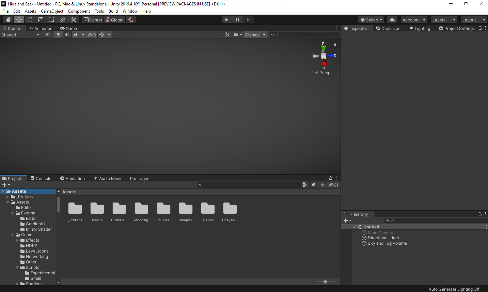
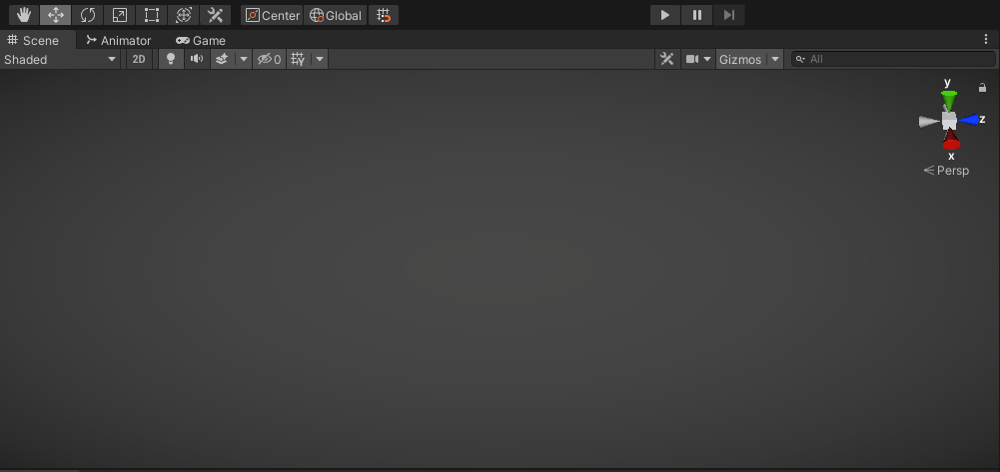
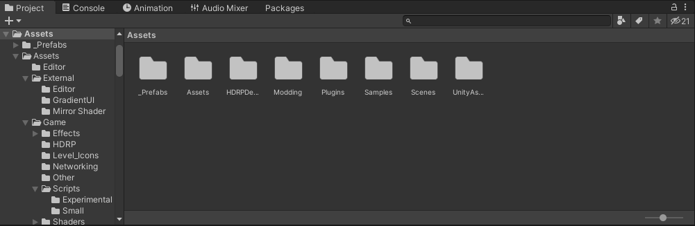
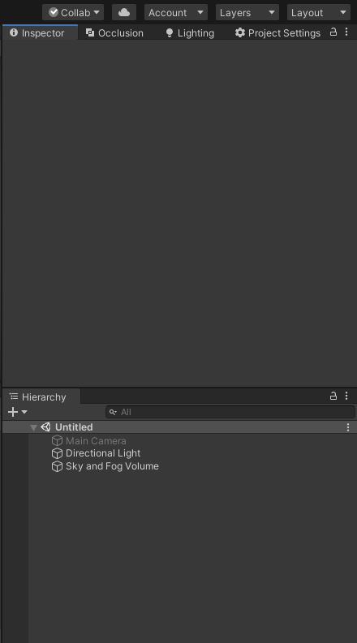

Devlog #02 - First Steps
This is the 2nd Devlog Example. In this one, I'll be explaining the Unity Editor windows. Since none of the windows are the same size, having a really wide or really tall image in one row on the page makes it look really ugly and unorganized. One easy fix for this is making the image and text be in the same line.
Unity Editor
The above image is of the Unity editor, and as you can see, it has 4 different windows all with different dimensions. Let's try to display them on the page.
Game View
The first image is of the game view where we can play our game as is in the Unity editor. This is the largest windows in the editor and it is usually the same aspect ratio as our screen. This image fits nicely on the page!
Asset Library
The secord image is of the Asset Library of our project. This is where all of our assets are stored. Usually this window is the same width as the game view, but way shorter. On our page, it fits very nicely and there are no problems with the layout.
Inspector
The last image is the inspector window and hierarchy window combined. These two windows make the image really tall and it does not look as good as the rest of the images on our post. To fix this, we can use float: left to move the image to the left of the page and a div with clear: both. This way, we can write text next to the image and when we do not need any more text, we can write a new paragraph after the div to make it in a new line. Ofc, this might look bad if we do not have enough text to cover the image, so we could use more or larger paragraphs to fix it, make the image smaller or just leave the image as is on the page. Sometimes, trying to fix it will make it worse for the reader.
If we need different image styles, all the styling on the post page should be done through HTML and the style tag. The reason behind this is because not every post is the same and we can't make a universal Cascade Style Sheet (CSS) for them, rather, we style every page separately as we need it.